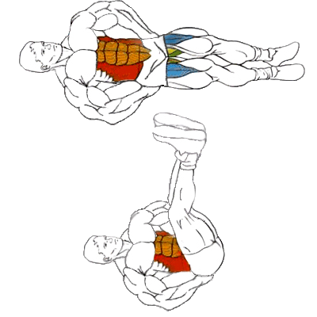

Упражнение на нижнюю часть пресса.
Исходное положение:
Лёжа на скамье/на наклонной скамье обхватите руками края скамьи.
Техника выполнения:
Поднять ноги как можно выше. Во время подъёма ноги немного согнуты в коленях.
В верхней точке нужно оторвать ягодицы от скамьи.
Вернуться в исходное положение.
Рекомендации:
При подъёме ног на наклонной скамье нагрузка на мышцы пресса возрастает.
Выполняйте упражнение за счёт мышц пресса, а не инерции.